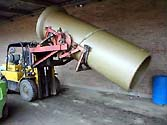
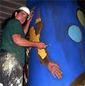
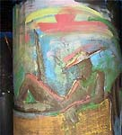
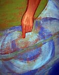
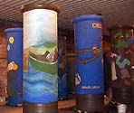
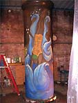
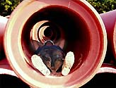

| Working Big: Sculpting
Industrial Clay Pipe
Article by Susannah
Israel.

In June of 2004 I had a wonderful opportunity to work at the Mission
Clay pipe factory in Pittsburgh, Kansas. I spent 12 days working
inside the plant, carving 12 terracotta sewer pipes, with expert
help from the factory workers. These pipes are termed "the
largest pipe in the world". All the pipes have now been fired,
without any structural problems, bringing the project to successful
completion.
Fig.1
Carving
the Pipes
Work began on Monday, June 14th. It was amazing to see the team
at work extruding ("pressing") the huge pipes, which actually
steam from the intense pressures of the hydraulic machinery. Two
8-ft pipes and two 12-ft pipes were extruded and delivered by forklift
to the designated studio in dryer A1. (Fig.1) A square flue-type
pipe, 4 x 4 feet, had been saved in shrink-wrap from the previous
week. Two days later, I got another two twelve-foot and two ten-foot
pipes before production switched to smaller pipes. Because of production
schedules, the work period was tightly scheduled from June 14 -
26th.
Previous experience carving raw industrial pipe at the Gladding,
McBean factory in Lincoln, California had taught me to expect a
very coarse, gritty clay body. The clay texture changes from sand-in-butter
to a dry concrete texture in only eight hours, if left uncovered.
It is essential to move rapidly around the pipe, marking the designs,
carving the images, and painting areas of color with slips
I use a needle tool to draw directly on the pipe. When extruded,
industrial pipe has a smooth, polished skin, which shows any mark
dramatically. Next I use a small trimming tool to cut a groove along
the outline. The small end of a pear-corer enlarges this groove,
at which point the tool is flipped and the outline again carved
out. Now the smooth clay of the outlined image is marked out in
a wide, shallow groove. It is important that the transition between
the deeply carved areas be as smooth as possible.
Preliminary sketches for the pipes are important when plotting
out the sheer scale of a twelve-foot pipe. Designing for a narrow,
vertical image led me to consider swimmers, tornados and circus
scenes, in order to logically stack the figures above one another
on the surface of the pipes.
Fig.2
For
a large image like the trapeze artist in Circus, I needed to carve
deeply around the arms and face. (Fig.2) This presents a special
problem, since the clay body used for industrial pipe contains a
huge proportion of refractory material, and the pieces range from
sand to lumps the size of small marbles. Inevitably these do seem
to appear right at the point of fine detail, like an eye or lip.
I found two solutions for the detailed areas of carving and modeling.
One is to add softened clay trimmings to deeply pitted areas. Such
areas need to be quite small, however, because of the risk that
the added clay will not adhere through the firing. This led me to
a new approach. After outlining and preliminary carving, I used
a toothed rib, scratching up the surface vigorously, bringing up
the finer clay particles. This is followed with a rubber rib, compressing
and refining the surface, which reacquires its highly polished,
almost burnished look. The rubber rib has to be used with considerable
pressure for this to work well. Sliding the edge of the rubber rib
along the grooved outline makes a single deep line around the contour
of the image, helping create the illusion of depth.
Color and Design
I used slips formulated at Leslie
Ceramics, generously donated by John Toki. Four months of testing
preceded the project, to check the fit, and making it possible to
choose colors which worked well with the fired terracotta of the
pipes For the pair of pipes titled Circus, Circus, I used a bright
vivid blue that evokes a festival feeling and suggests sky or a
big top tent around the acrobats. I had to make a 30-inch brush
handle to reach the bells of the tall pipes, even from a scaffold,
but had no problems with dripping. Twister is intended to be a colorful
melee of forms flying through the air. The images are outlined and
carved in shallow relief, with the exposed pipe texture left for
contrast
Fig. 3
The
first two pipes, Made in Kansas, form a collaborative piece including
work by factory workers and members of the Midwest
Clay Artists. I looked at the effects of different tools, textures
and brush sizes. Because of the generous amount of underglazes provided,
I wanted to use them to maximum advantage. I found alla prima (wet-on-wet)
painting to be a wonderful way to create depth in landscape. This
expressive method makes it possible to blend the slips on the clay
surface, giving a convincing sense of depth and motion to the sky.
It is a pleasure to work a large area so vigorously. The technique
appears in the sunset image of the dozing fisherman (Fig.3) on Made
in Kansas, as well as on Dos Rios, and Splash
Fig. 4
Dos
Rios, a pair of 10-ft pipes, shows life by the river in both Kansas
and California. The pipes are intended to form a single piece. It
is important that the contrasting landscapes form a unified image
when viewed together, so I used string and pins to ensure matching
horizon lines, and a three-pronged garden tool to make matching
water lines on the front face of the pipes. I spent particular care
on the human details of the images; (Fig.4) the scale of the pipes
makes this especially important. (Fig.5)
Fig. 5 
Fig.6
Splash
is not carved or painted at the top, leaving the skin of the clay
untouched. (Fig.6) A 10-ft diver, a child in a swimming tube, and
a third figure, cannonball diving into the water and holding her
nose, comprise the images. Carved waves in an Art Deco style surround
each figure, with bubbles floating above them as they splash into
the water. This pipe also refers to Kansas clay artist Waylande
Gregory, whose work Fountains of the Atom appeared at the 1939 World's
Fair
The Factory Setting
Walking through a working factory means being constantly alert for
forklifts with pallets of pipe, as well as other vehicles and busy
production areas. The large pipes are so big that human comparison
can be quite startling. (Fig 7).
Fig.7
The
safety equipment required for the factory includes hardhat, steel-toed
boots and jeans, all of which make working in the hot, wet environment
unique. I was careful to drink water all day long. During the hot
midday, I drank electrolyte solutions to prevent muscle cramps.
The work site space was about a thousand square feet, in "dryer"
A1. The dryer setting is where the industrial pipe is placed after
being extruded. It is designed to be very wet. There is a sub floor
fifteen feet below the pipe, which can be seen through the welded
steel grate of the floor. This floor seems treacherous until you
have seen a forklift with a 4000-pound pipe driving across it, then
any fears of dropping through it vanish. .
The sub floor is necessary to maintain the humidity. We hosed it
down through the grate, four or more times daily. We were also supplied
with a special gauge to monitor humidity and temperature, which
should be within 10 degrees of each other at all times
The factory workers are extremely knowledgeable about the pipe
conditions. We received daily visits in dryer A1 to check progress,
offer help and encouragement, and enjoyed several visits with family.
It was recommended that the pipes be wrapped for even drying, using
10 x 25-ft rolls of 2 ml plastic. There was discussion about needing
a very slow (28-day) firing schedule after the important, month-long
preliminary drying period. A further consideration was the rapid
cooling of the kilns, which is inevitable after summer's end. In
order to protect the pipes, they were carefully loaded by forklift
into the center of the enormous beehive kiln, insulated by the surrounding
pipes. All these and many other skilled solutions made possible
the successful collaboration of the Mission Clay pipe project.
For artists interested in future pipe carving projects, I highly
recommend contacting Bryan Vanzell at Mission
Clay.
Susannah Israel
Oakland, California
December 2004
More Articles
|
{kind=link}
{kind=link}
{kind=link}
{kind=link}
{kind=link}
{kind=link}
{kind=link}